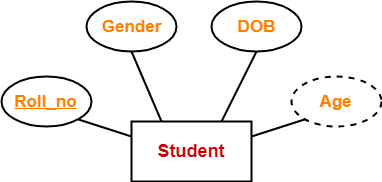

Attributes : Entities are represented by means of their properties, called attributes. All attributes have values. For example, a student entity may have name, class, and age as attributes.
1. primary Key Attributes : primary Key Attributes DBMS's key attributes are used to uniquely identify each row in a table. Usually, there is more than one key attribute in a table (primary key and foreign key).
For example: In a table of employees, the employee ID would be the primary key, while the manager ID would be the foreign key
.2. Single Valued Attributes : Single-valued attributes can only have one value. For example, a person's Social Security Number is a single-valued attribute. Social Security Numbers are used to uniquely identify individuals in the United States and are, therefore, single-valued attributes.
For example : Examples of single-valued attributes include employee numbers, customer numbers, and product codes. Single-valued attributes are typically used to provide a unique identifier for an entity and are often used in databases.

3. Multivalued Attributes : Multivalued attributes can have more than one value. For example, a person may have multiple email addresses or phone numbers. Multivalued attributes in DBMS are often used to store information about relationships between entities. For instance, an employee entity might have a multivalued attribute called "dependents" that stores the names of the employee's dependents. Multivalued attributes can also be used to represent hierarchical data.
4. Composite Attributes : Composite attributes are made up of two or more simple attributes. For example, a person's address may be a composite attribute that is made up of the person's street address, city, state, and zip code. Composite attributes can be used to create more complex data models and can be helpful when trying to represent data in a concise way.

5. Derived Attributes : Derived attributes are based on other attributes and are not stored directly in the database.
For example: Consider a database of employees. Each employee has a date of birth, and we might want to calculate their age. However, age is a derived attribute because it can be determined from the date of birth. As such, it would not make sense to store it directly in the database.
